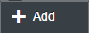
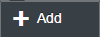

Modifying OData Operation
Prerequisites
-
You are configuring the communication channel with OData adapter.
-
Ensure that the TrustedCAs from the service provider you are connecting to are added to the system keystore associated with your SAP Cloud Platform Integration account.
Context
OData adapter enables you to modify the entity that you are accessing and the operation that you are performing on the entity. You can use this adapter to perform the following operations:
-
Query (GET)
-
Create (POST)
-
Update (PUT)
-
Merge (MERGE)
-
Read (GET)
You use this procedure to change the entity and modify the operation for OData adapter.
Procedure
-
If you want to specify filter conditions, choose and perform the following
substeps.
- In Filter By field, choose the fields that you want filter.
- In Operator field, choose the operator that you want to use to define the filter condition.
- In Input Type field, select the type of input you want to provide for defining the filter condition.
- In Value field, provide value of the input for filter condition.
- Select AND or OR based on how you want this filter condition to be considered when the operation is executed.
-
Choose


 
  to add more than one filter condition.
to add more than one filter condition.
-
If you want to specify sorting conditions, choose and perform the following
substeps.
- In Field, select the field you want to include in the sorting condition.
- If you want the sorting to be done in descending order, select the checkbox in Desc column.
-
Choose to add more than one filter condition.
Results
The system displays a prompt that an EDMX file is downloaded. You can use this EDMX file for connecting to the system subsequently for modifying operations.
The system also displays a prompt that a XSD file is created. You can use this XSD file in mapping steps.